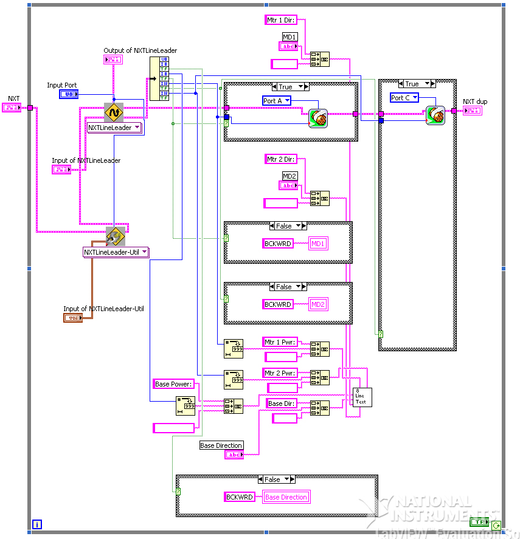

This program will allow yout to track a line given its
inputs and allows you to change the PID to perfect your NXT's line
tracking based on its design.
Inputs
Input Port
- This is where you input the
Input
Port your NXTLineLeader is
attached to.
The Input of NXTLineLeader Cluser includes...
Operation
| Track Line |
Looks for presence of the line, and returns motor
powers and directions |
| Read Raw |
Returns raw value of the sensor array's reading |
| Read Weighted Average |
Returns the weighted average of the
sensor array's values |
Base Direction - You can leave this unchanged for default value
(Forward).
Base Power- You can leave this unchanged for default value.
Outputs
The Output of NXTLineLeader Cluster
includes...
Raw or Weighted Average Value
Steering
Base Direction
Base Power
Motor 1 Direction - For simple operation wire this to your left
motor's direction plug.
Motor 1 Power - For simple operation wire this to your left
motor's power plug.
Motor 2 Direction - For simple operation wire this to your right
motor's direction plug.
Motor 2 Power - For simple operation wire this to your right
motor's power plug.
S1, S2...,S8-Sensor readings for all 8 sensors
XY Graph-A graph of all 8 sensor readings.
Sample Program

Sample located at
..\mindsesnors.com
LVEE\mindsensors.com Sample Programs\NXTLineLeader-SP\NXTLineLeader-Dual
Discuss Your Ideas>>